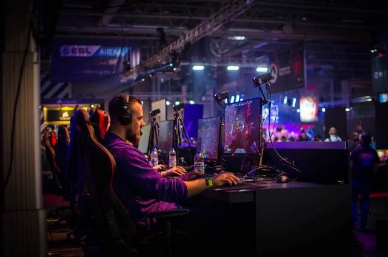

LAS VEGAS SPORTS CLINIC
Menu
Home
Blog
Patient Portal
Services
Esports Injuries

Esports, competitive video gaming, has become incredibly popular. Esports analytics firm Newzoo estimates that the global audience for esports will reach 1.1 billion by 2021. Estimates suggest that 90% of children in the U.S. play video games regularly. A study done by BMJ Open Sport & Exercise Medicine reports that esports athletes are at risk of developing a variety of overuse injuries. The study suggests that the most common health issue was eye fatigue, then neck and back pain, followed by wrist and hand pain. Arm, hand and wrist injuries affecting gamers are caused by the repetitive high speed and intensity wrist and hand movements involved in gaming. The more hours spent gaming, the more likely these injuries are to occur. It is not uncommon for gamers to practice for several hours a day. These injuries include: - Gamer's thumb - Carpal tunnel syndrome - Trigger finger - Tennis elbow - De Quervain's tenosynovitis - Cubital tunnel syndrome ###Gamer's Thumb Also known as DeQuervain's tenosynovitis, gamer's thumb is the inflammation of the tendon sheaths surrounding two key tendons which course through the the wrist into the thumb. These tendons are the abductor pollicis longus (APL) and extensor pollicis brevis (EPB), which are the tendons of the first dorsal compartment of the wrist. It is a result of repetitive strain on these tendons by use of mouse/keyboard/game controller. The presenting symptoms are wrist pain near the base of the thumb and/or locking or clicking in the thumb. initial treatment includes wearing a thumb spica splint, avoiding the offending activity, and physical therapy. Steroid injection is the most successful nonsurgical treatment, reported to have a 62-100% success rate. If nonsurgical treatment fails, surgical release of the sheath of the first dorsal compartment is indicated. To prevent gamer's thumb, take more frequent breaks during gaming or reduce the time spent gaming overall. The American Academy of Orthopaedic Surgeons recommends the following: Stretch your thumb during breaks. Try holding your hand out in front of you with your palm facing you, and gently bend the tip of your thumb down toward the base of your index finger. Hold for 30 to 60 seconds and repeat 10 times. Or put your palm on a table and lift your thumb up. Hold for 10 seconds, then lower your thumb. Do this 10 times. ###Carpal Tunnel Syndrome This develops as the median nerve becomes compressed from progressively worsening inflammation of the wrist flexor tendons ###Trigger Finger Also known as stenosing tenosynovitis, thickening of the A1 pulley and mainly the flexor digitorum profundus (FDP) tendon but also the flexor digitorum superficialis (FDS). Symptoms begin as pain at the level of the A1 pulley and progress to catching or locking. There is usually a nodule near the level of the A1 pulley. This condition is due to repetitive movements of the hand in gaming causing the previously mentioned tendon and pulley thickening. Over 60% of patients also have carpal tunnel syndrome. Initial treatment consists of physical therapy, splinting, and anti-inflammatory medication and this approach has been reported to provide relief in 40-87% of cases. Steroid injection is highly effective and is reported to have a 60-90% response rate. Surgery is an option if the previously mentioned treatments fail. ###Tennis Elbow Also known as lateral epicondylitis ###Cubital Tunnel Syndrome Also known as ulnar neuritis. This is often a result of gamers resting their elbow(s) on a surface while holding a controller or using a keyboard ####References 1. Donoghue, Joanne & Balentine, Jerry & Schmidt, Gordon & Zwibel, Hallie. (2019). Managing the health of the eSport athlete: An integrated health management model. _BMJ Open Sport & Exercise Medicine_. 5. e000467. 10.1136/bmjsem-2018-000467. 2. Buijsman M, 2018. Rainbow six: siege esports hours on twitch quadrupled compared to last year. Available from: https://newzoo.com/insights/articles/rainbow-six-siege-esports-hours-on-twitch-quadrupled-compared-to-last-year/ [Accessed 29 Oct 2019]. 3. Hester B, 2016. Teens spend 25 times more of their time playingvideo games than going to the movies. Available from: http://www.ign.com/articles/2016/12/21/teens-spend-25-times-more-of-their-time-playing-video-games-than-going-to-the-movies [Accessed 29 Oct 2019]. 4. Adams, Julie E., and Rohan Habbu. "Tendinopathies of the hand and wrist." JAAOS-Journal of the American Academy of Orthopaedic Surgeons 23.12 (2015): 741-750. 5. https://www.medicinenet.com/script/main/art.asp?articlekey=197093 6. *. VanDolah, Harrison J. et al. Clinicians’ Guide to Cannabidiol and Hemp Oils. _Mayo Clinic Proceedings_. 2019; 9:1840-1851.
Tip if you liked the article!